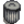
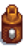
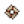
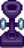

Minerals
- For resources, see Category:Resources.
- For an index to the completed minerals collection, see Collections#Minerals.
Minerals are items that can be found in the Mines and the Skull Cavern. Most minerals are acquired from geodes after having Clint process them. Some are found on the ground and some can be mined from nodes, which are also found in the Quarry. They can also sometimes be acquired as Monster Drops, as gifts from Villagers, or from the Statue of Endless Fortune. Minerals (other than geode minerals) are also possible items found in Fishing Treasure Chests.
Minerals can be donated to the Museum for rewards and achievements. Minerals not yet donated will have an item description of "Gunther can tell you more about this if you donate it to the museum." After one of that mineral has been donated, the item's description will appear. There are 53 different minerals which can be donated.
All Minerals, Gems, and Geodes can be used in the spool of the Sewing Machine located inside Emily and Haley's house to Tailor clothing, once the Sewing Machine is unlocked. All minerals, gems, and geodes can be used to dye existing clothing using the Sewing Machine, and some can be used to dye clothing using Dye Pots.
Minerals can be sold at a shipping box and also to the Blacksmith.
Foraged Minerals
Foraged minerals are found on the ground in The Mines and the Skull Cavern. They can be picked up in the same way that other forageables can, and if the Gatherer profession is chosen at Foraging level 5 then the player has a chance of a double harvest. They are used in crafting recipes and in the  Geologist's Bundle in the Boiler Room.
Geologist's Bundle in the Boiler Room.
Note that picking up foraged minerals normally does not award Foraging XP, but a bug results in 7 Foraging XP awarded only for a duplicate mineral created by the Gatherer profession.
| Image | Name | Description | Sell Price | Gemologist Sell Price | Location | Used in |
|---|---|---|---|---|---|---|
| Quartz | A clear crystal commonly found in caves and mines. | The Mines (Floors 1-120) Garbage Can |
||||
| Earth Crystal | A resinous substance found near the surface. | The Mines (Floors 1-39) |
 Mayonnaise Machine Fish Pond (Quest) | |||
| Frozen Tear | A crystal fabled to be the frozen tears of a yeti. | The Mines (Floors 40-79) |
 Warrior Ring
| |||
| Fire Quartz | A glowing red crystal commonly found near hot lava. | The Mines (Floors 80-120) |
 Slime Egg-Press |
Gems
Gems are used in Crafting recipes and are generally "loved" or "liked" as gifts. All gems, except Diamond and Prismatic Shard, can be found in crates and barrels in The Mines.
Geode Minerals
Geode minerals are extracted from geodes. They are mainly used as donations to the Museum, or sold for a small profit. They can be used to tailor or dye clothing. They are generally disliked as gifts. The Wizard likes all Geode Minerals.
| Image | Name | Description | Sell Price | Gemologist Sell Price | Location | Used in |
|---|---|---|---|---|---|---|
| Tigerseye | A stripe of shimmering gold gives this gem a warm luster. | Magma Geode |
| |||
| Opal | Its internal structure causes it to reflect a rainbow of light. | |||||
| Fire Opal | A rare variety of opal, named for its red spots. | Magma Geode |
||||
| Alamite | Its distinctive fluorescence makes it a favorite among rock collectors. | |||||
| Bixite | A dark metallic Mineral sought after for its cubic structure. | Magma Geode |
||||
| Baryte | The best specimens resemble a desert rose. | Magma Geode |
||||
| Aerinite | These crystals are curiously light. | |||||
| Calcite | This yellow crystal is speckled with shimmering nodules. | |||||
| Dolomite | It can occur in coral reefs, often near an underwater volcano. | Magma Geode |
||||
| Esperite | The crystals glow bright green when stimulated. | |||||
| Fluorapatite | Small amounts are found in human teeth. | |||||
| Geminite | Occurs in brilliant clusters. | |||||
| Helvite | It grows in a triangular column. | Magma Geode |
||||
| Jamborite | The crystals are so tightly packed it almost looks fuzzy. | |||||
| Jagoite | A high volume of tiny crystals makes it very glittery. | |||||
| Kyanite | The geometric faces are as smooth as glass. | |||||
| Lunarite | The cratered white orbs form a tight cluster. | |||||
| Malachite | A popular ornamental stone, used in sculpture and to make green paint. | |||||
| Neptunite | A jet-black crystal that is unusually reflective. | Magma Geode |
||||
| Lemon Stone | Some claim the powdered crystal is a dwarvish delicacy. | Magma Geode |
| |||
| Nekoite | The delicate shards form a tiny pink meadow. | |||||
| Orpiment | Despite its high toxicity, this Mineral is widely used in manufacturing and folk medicine. | |||||
| Petrified Slime | This little guy may be 100,000 years old. | Fish Pond (Quest) | ||||
| Thunder Egg | According to legend, angry thunder spirits would throw these stones at one another. | |||||
| Pyrite | Commonly known as "Fool's Gold". | |||||
| Ocean Stone | An old legend claims these stones are the mosaics of ancient mermaids. | Fish Pond (Quest) | ||||
| Ghost Crystal | There is an aura of coldness around this crystal. | |||||
| Jasper | When polished, this stone becomes attractively luminous. Prized by ancient peoples for thousands of years. | Magma Geode |
||||
| Celestine | Some early life forms had bones made from this. | |||||
| Marble | A very popular material for sculptures and construction. | Marble Brazier | ||||
| Sandstone | A common type of stone with red and brown striations. | |||||
| Granite | A speckled Mineral that is commonly used in construction. | Fish Pond (Quest) | ||||
| Basalt | Forms near searing hot magma. | Magma Geode |
Fish Pond (Quest) | |||
| Limestone | A very common type of stone. It's not worth very much. | Fish Pond (Quest) | ||||
| Soapstone | Because of its relatively soft consistency, this stone is very popular for carving. | |||||
| Hematite | An iron-based Mineral with interesting magnetic properties. | |||||
| Mudstone | A fine-grained rock made from ancient clay or mud. | Fish Pond (Quest) | ||||
| Obsidian | A volcanic glass that forms when lava cools rapidly. | Magma Geode |
| |||
| Slate | It's extremely resistant to water, making it a good roofing material. | |||||
| Fairy Stone | An old miner's song suggests these are made from the bones of ancient fairies. | |||||
| Star Shards | No one knows how these form. Some scientists claim that the microscopic structure displays unnatural regularity. | Magma Geode |
Geodes
Geodes are mineral deposits that contain other minerals or certain Artifacts. They can be found primarily by breaking rocks in The Mines.
Geodes must be processed either using a Geode Crusher or at the Blacksmith to obtain the minerals inside. Clint charges  25g each, while the Geode Crusher is free once available. Certain minerals are only available from certain types of Geodes, but Omni Geodes can contain any mineral.
25g each, while the Geode Crusher is free once available. Certain minerals are only available from certain types of Geodes, but Omni Geodes can contain any mineral.
| Image | Name | Description | Sell Price | Location | Used in |
|---|---|---|---|---|---|
| Geode | A blacksmith can break this open for you. |
|
Fish Pond (Quest) | ||
| Frozen Geode | A blacksmith can break this open for you. |
|
|||
| Magma Geode | A blacksmith can break this open for you. |
|
|||
| Omni Geode | A blacksmith can break this open for you. These geodes contain a wide variety of minerals. |
|
Clint, Dwarf (Loved Gift) Fish Pond (Quest) |
Collection
Minerals do not have to be shipped or donated to the Museum to count towards the Collections Tab of the player menu. They only need to be picked up.
Note that minerals found in Fishing Treasure Chests may not appear as found on the collections tab. Dragging the mineral outside the inventory window and allowing it to be taken back into inventory may correct this. Holding the mineral in inventory overnight may also correct this.
Note also that minerals' descriptions appear on the collections tab as soon as they are found, even while the inventory description says "Gunther can tell you more about this if you donate it to the museum."
History
- 1.1: Removed quality stars from foraged minerals.
- 1.5: Geodes can now be processed outside of the Blacksmith using Geode Crushers.
- 1.6.3: Geodes can now be processed during tool upgrades.
| Minerals | |
|---|---|
| Foraged Minerals | Earth Crystal • Fire Quartz • Frozen Tear • Quartz |
| Gems | Amethyst • Aquamarine • Diamond • Emerald • Jade • Prismatic Shard • Ruby • Topaz |
| Geode Minerals | Aerinite • Alamite • Baryte • Basalt • Bixite • Calcite • Celestine • Dolomite • Esperite • Fairy Stone • Fire Opal • Fluorapatite • Geminite • Ghost Crystal • Granite • Helvite • Hematite • Jagoite • Jamborite • Jasper • Kyanite • Lemon Stone • Limestone • Lunarite • Malachite • Marble • Mudstone • Nekoite • Neptunite • Obsidian • Ocean Stone • Opal • Orpiment • Petrified Slime • Pyrite • Sandstone • Slate • Soapstone • Star Shards • Thunder Egg • Tigerseye |
| Geodes | Geode • Frozen Geode • Magma Geode • Omni Geode |